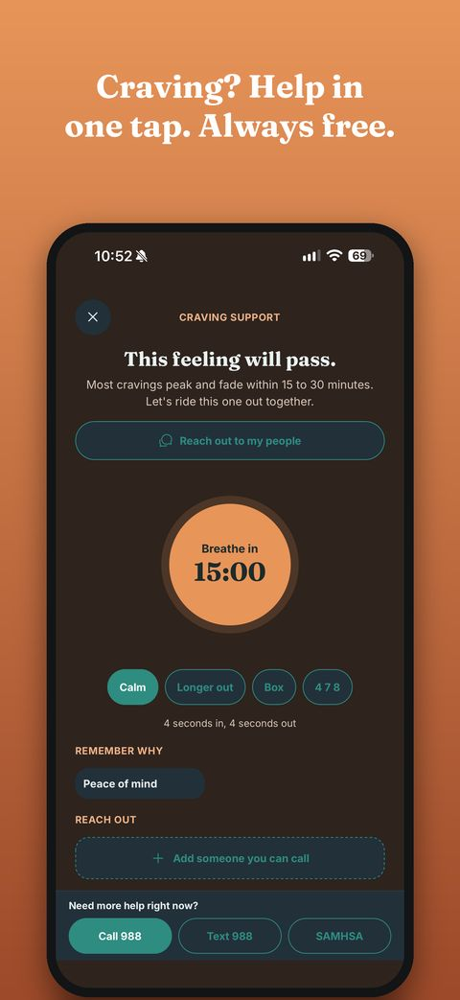
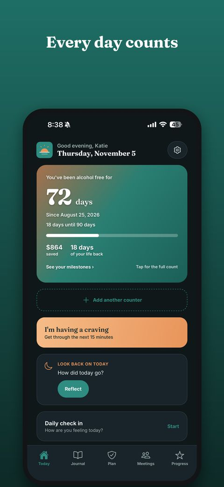
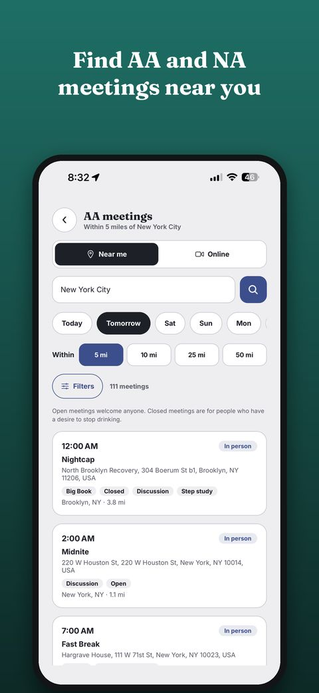
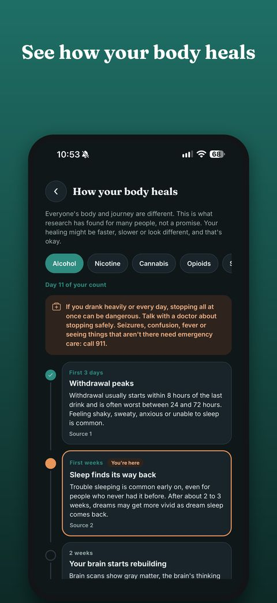
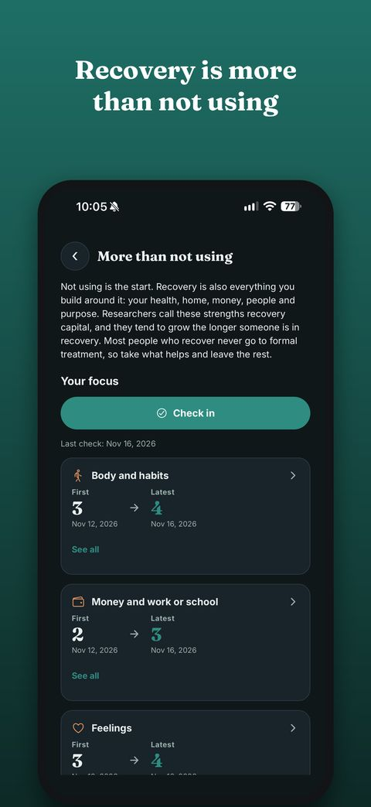
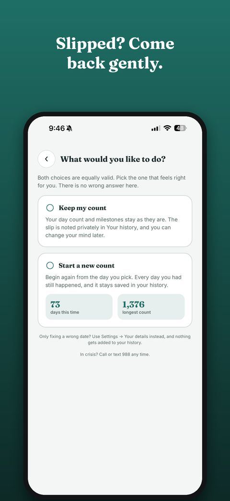
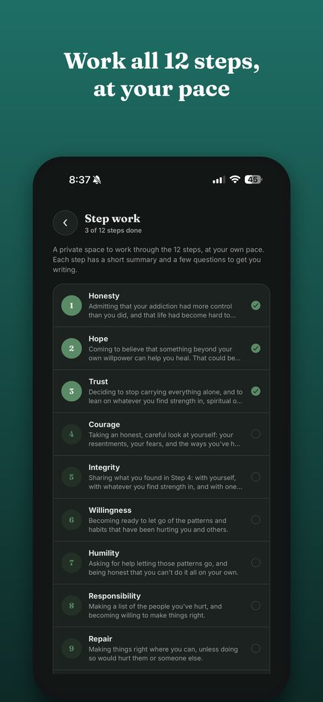
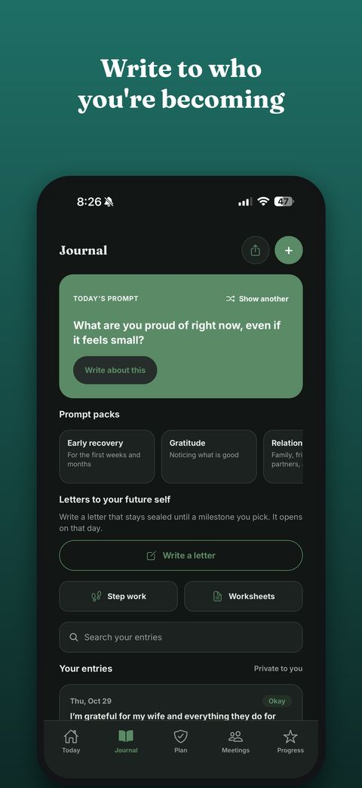
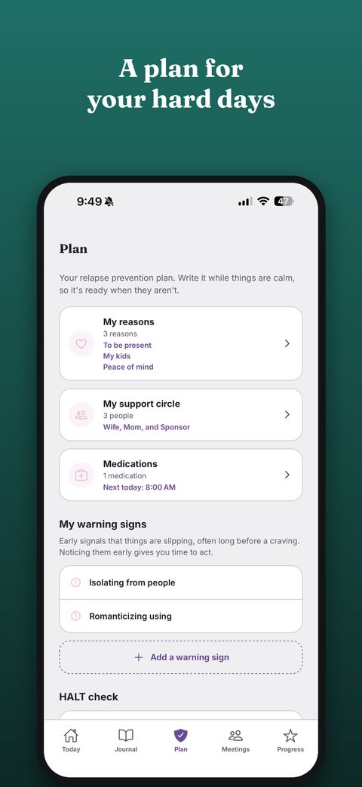
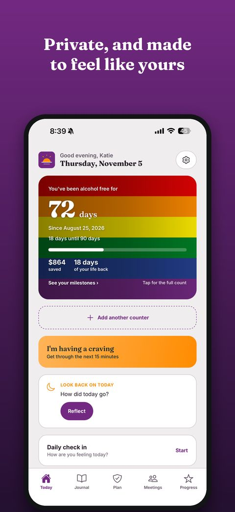

Bright Days helps you get through cravings, notice your patterns, find meetings, and celebrate every milestone. No accounts, no ads, and everything stays private on your phone.
Download on the App Store Free for iPhone.
Black Friday: Bright Days Plus is 50% off through Monday.










An optional upgrade with more support for every part of your recovery. Craving support stays free, always.
How your body heals, a research backed timeline for alcohol, nicotine, cannabis, opioids, and stimulants, with sources listed. And More than not using: eleven areas of life, from sleep and money to connection and purpose, with fresh ideas to try each week and check ins to see your progress.
More coping exercises, like name it to tame it and a body scan, with favorites pinned to your craving screen. If, then plans for your triggers, risky dates with reminders, and your craving history.
Insights, mood and craving charts with your full history, and a monthly summary to share with a therapist or sponsor.
Multiple sobriety counters, your own milestones, letters to your future self that stay sealed until a milestone, color themes, and a photo of your why.
Worksheets like cost benefit analysis and ABC, plus guiding questions for all 12 steps, a Step 4 inventory, and an amends list. Share any of it as a PDF. Step 1 is free to try.
Meeting filters, stats, and PDF attendance records; journal prompt packs, search, and PDF export; and backups for a new phone.
Black Friday: Plus is 50% off through Monday.
Download on the App Store Free for iPhone. Plus is optional.
Questions? Visit support or email brightdaysapp@gmail.com.